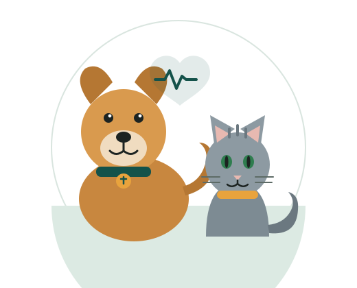

Tienda en línea
Compra alimento, arena y accesorios desde el celular, con stock real y despacho el mismo día en Surco.
Atención veterinaria, alimento y accesorios con entrega a domicilio. Programa la vacuna, recibe el alimento cada mes y revisa la historia clínica de tu mascota cuando quieras.

VetPet Connect es la plataforma con la que atendemos a las familias de Surco dentro y fuera del local.
Compra alimento, arena y accesorios desde el celular, con stock real y despacho el mismo día en Surco.

Elige la frecuencia y recibe el alimento de tu mascota sin volver a pedirlo. Cancelas cuando quieras.

Vacunas, desparasitaciones y controles registrados en línea, con recordatorio antes de cada fecha.
Dos médicos veterinarios colegiados atienden de lunes a sábado. Reserva tu horario y evita la espera.
Tres pasos para empezar a usar la plataforma: